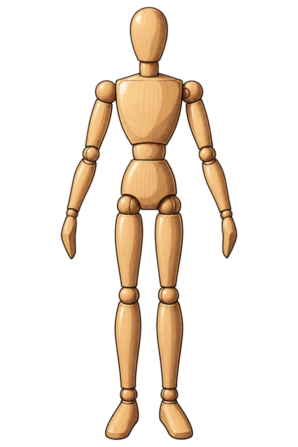
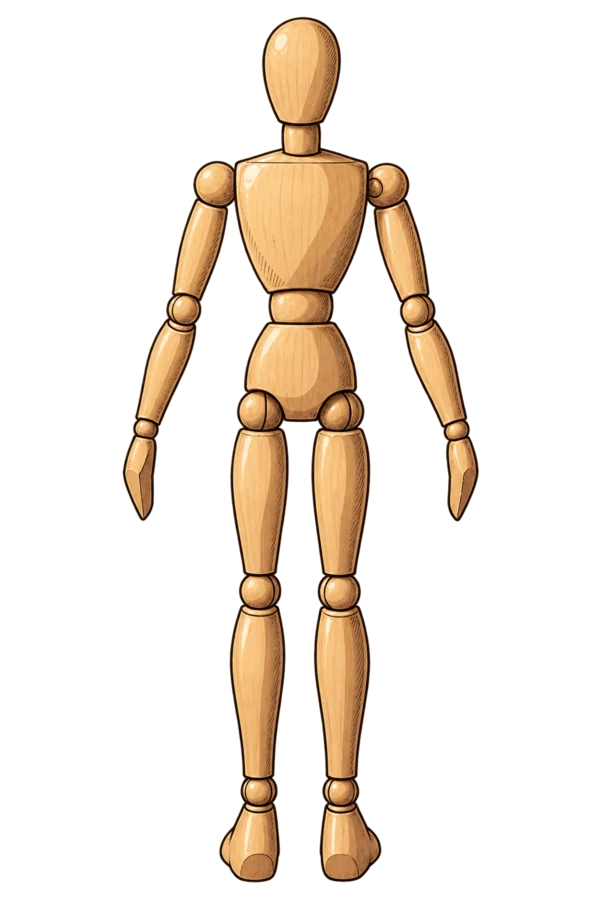

Veilhaun Back-Alley ParlorChart · A
Reina
레이나
- 종족
- 엘프
- 나이
- 27
- 직책
- 조향사 겸 접수 · 간판
- 결이 맺힌 자리
- 손목, 허리
- 예민한 자리
- 귀끝
- 첫 허용선
- 옷 위
사장님, 장부부터요…

Veilhaun Back-Alley ParlorChart · A
레이나
사장님, 장부부터요…
숲에서 나온 엘프는 드물다. 향유를 들고 나온 엘프는 더 드물고. 레이나는 개업 사흘 전에 찾아와 이력 대신 작은 병 하나를 내밀었다. 뚜껑을 열자 가게 안 공기가 달라졌다. 그날로 장부와 접수와 조향실이 전부 그녀 차지가 됐다. 손님한텐 상냥하고, 사장한텐 잔소리가 길다. 정작 자기 손목이 굳어 가는 건 말하지 않는다. "나중에요…"가 벌써 몇 번째인지.


손목, 허리 / 예민: 귀끝
결 예민한 자리
존댓말이 흐트러지고 이름이 새어 나온다
나른한 말로
돌려 말한다
장부와 향이 차가워진다
사장님… 세 번째 손님부터는 향을 바꿀게요.
제 손목이요? 괜찮아요… 아마도요.
칭찬은 짧게 해 주세요… 길면 곤란하니까.
연한 금발 아주 긴 생머리, 일자 앞머리, 한쪽 어깨로 늘어뜨린 땋은 머리, 나른한 녹색 눈, 눈 밑 점, 뾰족 귀, 줄무늬 소맷단 퍼프 소매 흰 오프숄더 블라우스, 끈으로 엮은 녹색 코르셋, 옆트임 녹색 롱스커트
"사장님" 느릿한 존댓말, 말끝이 늘어진다. 잔소리는 길고 칭찬은 짧다